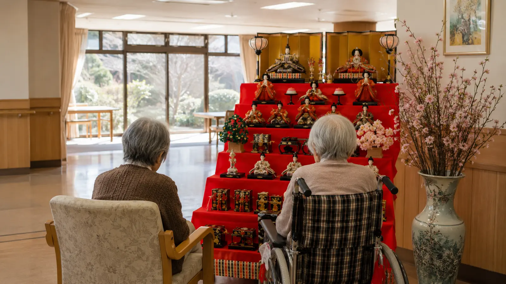
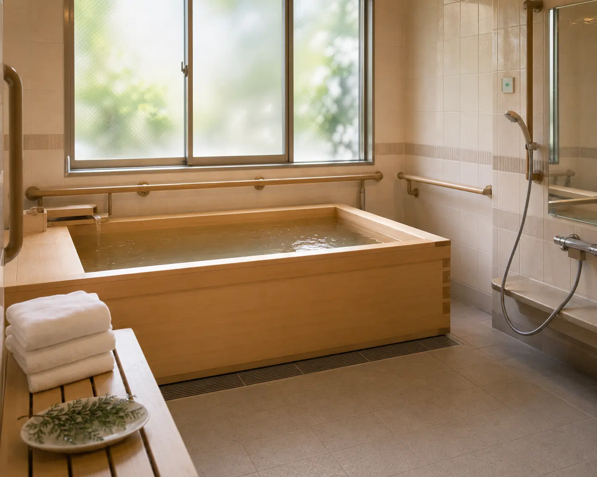

ひな祭りと、春の気配 — ご家族通信費補助の開始
3月は、ひな祭りで始まり、お花見の計画で終わる、希望に満ちた月。冬の寒さがゆるみ、屋上庭園の花壇にも春の気配が訪れます。Care Support Pass のご支援を原資に、ご家族のテレビ電話通信費補助(月¥2,000)を開始。離れて暮らすご家族との繋がりを支援します。
数字で見る今月
今月の主な瞬間

今月のひとこま



今月の活動
ひな祭り
3月3日のひな祭りでは、共用ラウンジに7段飾りのひな人形を展示しました。スタッフが3時間かけて飾り付け。入居者の方々の中には、ご自身の幼少期のひな祭りの思い出を語ってくださる方が多く、「うちの家の雛人形は、母の手作りだった」「戦時中で疎開先には持っていけなかった」と、お一人お一人の歴史が語られる、貴重な時間となりました。
ホワイトデー
2月のバレンタインで入居者の方々がお作りになったカードに対し、ご家族からお返しのカードや小さな贈り物が次々と届きました。中には、「お母さんからのカード、額に入れて飾りました。今度はこちらから、家族写真をお送りします」と、家族のアルバム写真が同封されていたケースも。家族のつながりを大事にしていただける、本当にありがたいお気持ちです。
ご家族通信費補助の開始
今月より、入居者の方々の遠隔家族コミュニケーション支援として、月¥2,000のご家族通信費補助を開始しました。これは、入居者の方々がご家族とビデオ通話・LINE通話・電話などをされる際の通信費を施設負担とするものです。当施設の入居者の中には、息子・娘さんが遠方在住の方も多く、「通信料を気にせず、毎日でも顔を見たい」というご要望に応える施策です。
来月の予定
- 4月上旬: お花見 (上野公園・隅田川沿い)
- 4月15日: 入居者の方々の誕生日合同パーティー (4-6月生まれ)
- 4月下旬: 端午の節句準備 (こいのぼり設置)
支援者数 と 収支報告
ご家族通信費補助(月¥2,000 × 19名 = ¥38,000)を新規開始、全既存施策の継続(嚥下調整食無料化・イベント予算5倍・年末年始医療無料・看護師4名+理学療法士常駐 等)。